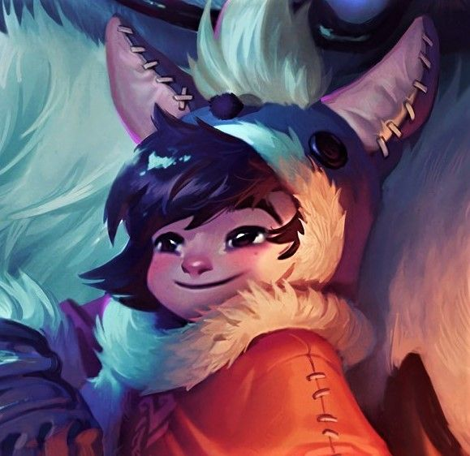
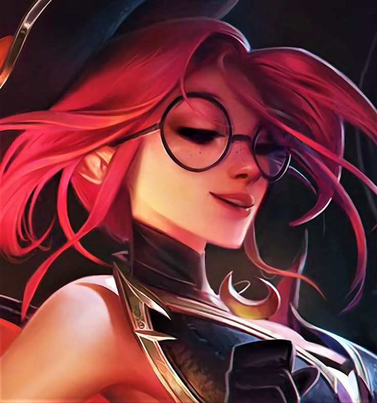
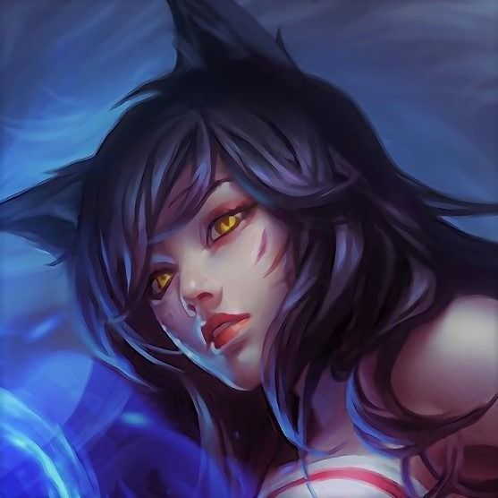
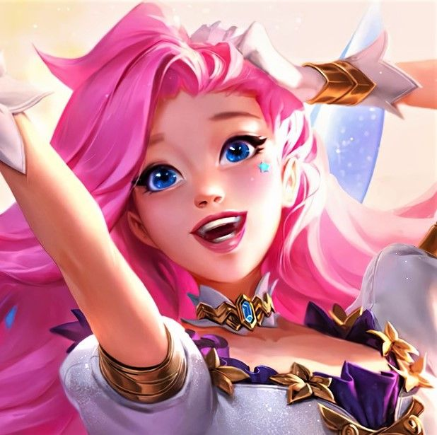

NUNU & WILLUMP

Once upon a time, there was a boy who wanted to prove he was a hero
by slaying a fearsome monster—only to discover that the beast, a lonely and magical yeti,
merely needed a friend.
Maestry 5
JANNA

Armed with the power of Runeterra's gales, Janna is a mysterious,
elemental wind spirit who protects the dispossessed of Zaun. Some believe she was
brought into existence by the pleas of Runeterra's sailors who prayed for fair winds
as they navigated.
Maestry 5
AHRI

Innately connected to the magic of the spirit realm, Ahri is a fox-like
vastaya who can manipulate her prey's emotions and consume their essence—receiving flashes
of their memory and insight from each soul she consumes.
Maestry 4
SERAPHINE

Seraphine can hear the souls of others—the world sings to her, and she sings back.
Though these sounds overwhelmed her in her youth, she now draws on them for
inspiration, turning the chaos into a symphony.
Maestry 4